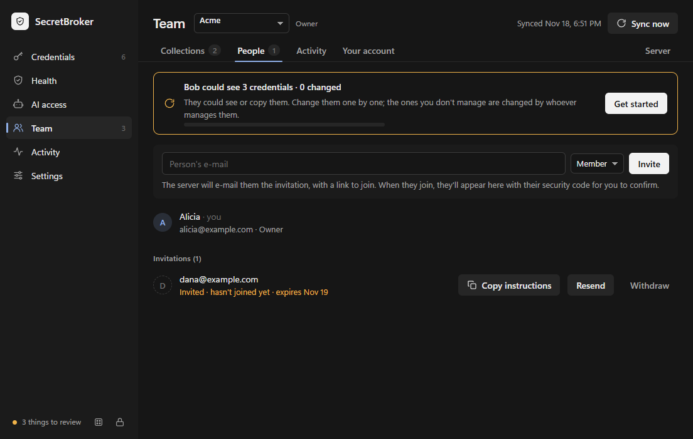
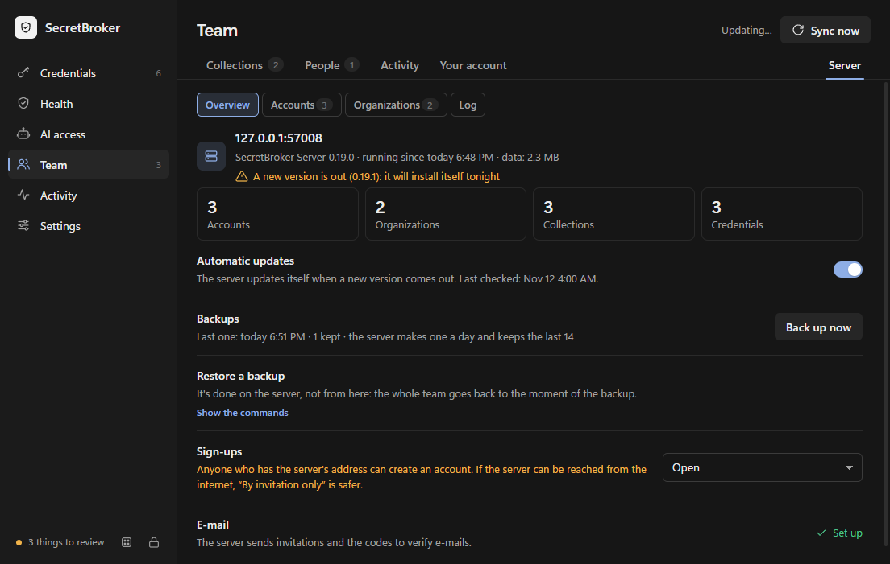

How teams work
- An organization is your team: its people and its collections.
- A collection is a shared folder. You choose who is in it and with which permission. You can also share a credential with one person, with no collection to set up.
- Everything is encrypted on your PC before it leaves. The team server stores and forwards it without being able to read it: not the secrets, not the names of credentials, not the names of collections.
- Only what you put in a collection or share with someone is shared. The rest of your vault stays on your PC.
You need a team server. Today you run your own, which the next section makes short. A hosted server is planned; it will run the same code, and the self-hosted one stays fully featured.
Install the server with one command
For a small Linux server you rent or own, reached over SSH. You need an x86-64 server with Ubuntu 22.04, 24.04 or 26.04 (1 vCPU and 1 GB of RAM are plenty), a domain name you can add a DNS record to, and ports 80 and 443 open.
- Point a name at the server. In your DNS provider, add an
Arecord such assecrets.example.comwith the server's public IP address. - Open ports 80 and 443 in your provider's firewall.
- Run this on the server. It asks for the domain name and your e-mail:
curl -fsSL https://github.com/xBofi/SecretBroker/releases/latest/download/install-server.sh | sudo bash - Open SecretBroker on your PC, go to Team › Create account and use the server's address, your e-mail and the one-time code the installer printed. That code only works for your e-mail and makes you the server's administrator.
The command sets up HTTPS with a certificate that renews itself, a backup every night (the last 14 are kept) and the server as a locked-down system service. It installs only an archive whose signature matches the SecretBroker release key, and from then on the server installs signed updates by itself every night; you can turn that off. Running the command again repairs and upgrades.
Create your account and organization
- In Team, choose Create account. Fill in Server (its address; an invitation link can be pasted here too), your e-mail, Your name and an Account password of 12 characters or more. The Invitation code is asked for if your server requires one.
- Save your recovery code. It is shown only once: Copy it, Save as a file or Save in my personal vault, and keep a copy away from this PC. If you forget the account password and no PC is still connected, it is the only way back in without losing what your team shares with you.
- Verify your e-mail. The server sends an 8-digit code. A server that sends no e-mail asks you to have its administrator verify you instead.
- Click Create organization and give it the name of your team or company.
The account password is asked for once on each PC. The server never learns it, so nobody can recover it for you: that is what the recovery code is for.
Invite people

- In Team › People, type the Person's e-mail, choose their role and click Invite.
- If your server sends e-mail, they receive the invitation with a link. If it does not, Copy instructions gives you a text to pass on through whatever channel you use. The link only fills in their form; it carries no password.
- They install SecretBroker, open the link, create their account and Accept.
- Confirm them. They appear in People with a security code. Ask them to read you theirs, from Team › Your account, by phone or in person, and compare. If it does not match, do not confirm: someone could be posing as them.
The code comparison is what stops anyone, the server included, from slipping in another key. Until you have verified someone on your PC, nothing is shared with them.
Share credentials
With one person
- Open a credential and click Share. The dialog opens on With a person.
- Choose With whom and Their permission: Editor, Viewer or Use only.
- Click Share with their name. It reaches them encrypted.

Team › People › Share with… does the same for several credentials at once.
In a collection
In Team › Collections, Create collection, then choose who is in and with which permission. After that, Share › In a collection on any credential puts it there.
A credential is shared whole: the key, the notes and where it may go. When the AI asks for approval is up to each person on their own PC. If a teammate later changes where a shared key may go, or rewrites the description your AI reads, the change waits on your PC until you Review and accept it.
Permissions
| Permission | See and copy | Their AI and programs use it | Change it, rotate its key | Add and remove people |
|---|---|---|---|---|
| Manager | Yes | Yes | Yes | Yes |
| Editor | Yes | Yes | Yes | No |
| Viewer | Yes | Yes | No | No |
| Use only | No | Yes | No | No |
In the organization itself people are Owner, Admin or Member. Owners can always recover a collection, and the app warns you while a single person manages one alone.
When someone leaves
- In Team › People, use the bin next to their name: Remove from the organization.
- The collections they could open are re-encrypted with new keys, and the server stops serving them.
- The app lists every credential they could see: Change what they could see. Go through it with Get started; each one opens Rotate with help. Health shows the same list until it is done.
The same happens when you stop sharing something with one person: the credential is flagged “Change: … had it”.
If someone loses access
- They have their recovery code. On the sign-in form, Forgot your password? takes the e-mail, the recovery code and a new password. Everything shared with them comes back.
- They still have a PC connected. Team › Your account, then I forgot it under the account password, sets a new one without the old.
- Neither. An admin opens Lost access next to their name in People and chooses Remove and invite again. Their old account is removed like any other, and they come back with a new one once they prove the e-mail is theirs. The admin then gives them access to their collections again.
Run the server from the app
Whoever administers the server sees a Server tab in Team. It replaces the terminal for nearly everything.

- Overview: the server's version and whether it is up to date, Automatic updates, Backups with Back up now, and Sign-ups: Open, By invitation only or Closed. With invitations only, Create sign-up code gives a single-use code to pass on.
- Accounts: verify an e-mail, Disable an account (a lost laptop, someone who left on bad terms) or delete it.
- Organizations: who owns each one, and handing ownership over.
- Log: what was done to accounts and settings.
Restoring a backup stays on the server on purpose, because it takes the whole team back in time. The app shows the exact commands.
What the server sees
It never sees passwords, keys, credential names, notes, collection names or your account password.
It does see e-mail addresses and display names, organization names, who belongs to what and with which permission, how many items there are, their sizes and when they changed. If the server were fully compromised, that is what the attacker would learn. They could also refuse to serve you or delete what the server holds, but not forge a member, a change or a deletion: those are signed by whoever made them, and your app checks.
The security page and the threat model go further.
Last updated: November 18, 2026